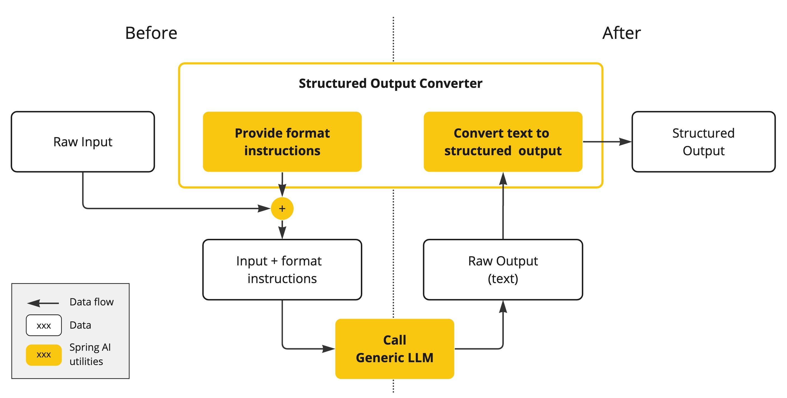

结构化输出转换器 #
LLM 生成结构化输出的能力对于依赖可靠解析输出值的下游应用程序至关重要。开发人员希望快速将 AI 模型的结果转换为可传递给其他应用程序函数和方法的数据类型，例如 JSON、XML 或 Java 类。
Spring AI Structured Output Converters 有助于将 LLM 输出转换为结构化格式。如下图所示，此方法围绕 LLM 文本补全端点运行：

使用通用补全 API 从大型语言模型 (LLM) 生成结构化输出需要仔细处理输入和输出。结构化输出转换器在 LLM 调用前后起着至关重要的作用，确保实现所需的输出结构。
在 LLM 调用之前，转换器会将格式指令附加到提示中，为模型提供生成所需输出结构的明确指导。这些指令充当蓝图，塑造模型的响应以符合指定的格式。
LLM 调用后，转换器会获取模型的输出文本，并将其转换为结构化类型的实例。此转换过程包括解析原始文本输出并将其映射到相应的结构化数据表示形式，例如 JSON、XML 或特定于域的数据结构。
结构化输出 API #
StructuredOutputConverter 接口允许您获取结构化输出，例如将基于文本的 AI 模型输出映射到 Java 类或值数组。接口定义如下：
public interface StructuredOutputConverter<T> extends Converter<String, T>, FormatProvider {
}
它结合了 Spring [
Converter<String、T>](
https://docs.spring.io/spring-framework/docs/current/javadoc-api/org/springframework/core/convert/converter/Converter.html) 接口和 FormatProvider 接口
public interface FormatProvider {
String getFormat();
}
下图显示了使用结构化输出 API 时的数据流。

FormatProvider 为 AI 模型提供特定的格式指南，使其能够生成文本输出，并使用 Converter 将其转换为指定的目标类型 T 以下是此类格式指令的示例：
格式说明通常使用 [ PromptTemplate](prompt.html#_prompttemplate) 附加到用户输入的末尾，如下所示：
StructuredOutputConverter outputConverter = ...
String userInputTemplate = """
... user text input ....
{format}
"""; // user input with a "format" placeholder.
Prompt prompt = new Prompt(
new PromptTemplate(
this.userInputTemplate,
Map.of(..., "format", outputConverter.getFormat()) // replace the "format" placeholder with the converter's format.
).createMessage());
Converter<String, T> 负责将模型中的输出文本转换为指定类型 T 的实例。
可用的转换器 #
目前，Spring AI 提供 AbstractConversionServiceOutputConverter 、 AbstractMessageOutputConverter 、 BeanOutputConverter 、 MapOutputConverter 和 ListOutputConverter 实现：

- AbstractConversionServiceOutputConverter
- 提供预配置的 GenericConversionService ，用于将 LLM 输出转换为所需格式。不提供默认的 FormatProvider 实现。 - AbstractMessageOutputConverter
- 提供预配置的 MessageConverter ，用于将 LLM 输出转换为所需格式。不提供默认的 FormatProvider 实现。 - BeanOutputConverter
- 此转换器配置了指定的 Java 类（例如 Bean）或 ParameterizedTypeReference ，并采用 FormatProvider 实现，指示 AI 模型生成符合 DRAFT_2020_12 的 JSON 响应，该响应 JSON Schema 源自指定的 Java 类。随后，它利用 ObjectMapper 将 JSON 输出反序列化为目标类的 Java 对象实例。 - MapOutputConverter - 通过 FormatProvider 实现扩展了 AbstractMessageOutputConverter 的功能，该实现可指导 AI 模型生成符合 RFC8259 标准的 JSON 响应。此外，它还包含一个转换器实现，该实现利用提供的 MessageConverter 将 JSON 负载转换为 java.util.Map<String, Object> 实例。
- ListOutputConverter - 扩展了 AbstractConversionServiceOutputConverter ，并包含一个专为逗号分隔列表输出而定制的 FormatProvider 实现。该转换器实现使用提供的 ConversionService 将模型文本输出转换为 java.util.List 。
使用转换器 #
以下部分提供了如何使用可用的转换器生成结构化输出的指南。
Bean 输出转换器 #
下面的示例展示如何使用 BeanOutputConverter 生成演员的电影作品。
代表演员电影作品的目标记录：
record ActorsFilms(String actor, List<String> movies) {
}
以下是如何使用高级、流畅的 ChatClient API 应用 BeanOutputConverter：
ActorsFilms actorsFilms = ChatClient.create(chatModel).prompt()
.user(u -> u.text("Generate the filmography of 5 movies for {actor}.")
.param("actor", "Tom Hanks"))
.call()
.entity(ActorsFilms.class);
或者直接使用低级 ChatModel API：
BeanOutputConverter<ActorsFilms> beanOutputConverter =
new BeanOutputConverter<>(ActorsFilms.class);
String format = this.beanOutputConverter.getFormat();
String actor = "Tom Hanks";
String template = """
Generate the filmography of 5 movies for {actor}.
{format}
""";
Generation generation = chatModel.call(
new PromptTemplate(this.template, Map.of("actor", this.actor, "format", this.format)).create()).getResult();
ActorsFilms actorsFilms = this.beanOutputConverter.convert(this.generation.getOutput().getText());
生成的架构中的属性排序 #
BeanOutputConverter 通过 @JsonPropertyOrder 注解支持在生成的 JSON Schema 中自定义属性排序。此注解允许您指定属性在 Schema 中出现的精确顺序，而无需考虑它们在类或记录中的声明顺序。
例如，为了确保 ActorsFilms 记录中的属性的特定顺序：
@JsonPropertyOrder({"actor", "movies"})
record ActorsFilms(String actor, List<String> movies) {}
此注释适用于记录和常规 Java 类。
通用 Bean 类型 #
使用 ParameterizedTypeReference 构造函数指定更复杂的目标类结构。例如，要表示演员及其电影作品列表：
List<ActorsFilms> actorsFilms = ChatClient.create(chatModel).prompt()
.user("Generate the filmography of 5 movies for Tom Hanks and Bill Murray.")
.call()
.entity(new ParameterizedTypeReference<List<ActorsFilms>>() {});
或者直接使用低级 ChatModel API：
BeanOutputConverter<List<ActorsFilms>> outputConverter = new BeanOutputConverter<>(
new ParameterizedTypeReference<List<ActorsFilms>>() { });
String format = this.outputConverter.getFormat();
String template = """
Generate the filmography of 5 movies for Tom Hanks and Bill Murray.
{format}
""";
Prompt prompt = new PromptTemplate(this.template, Map.of("format", this.format)).create();
Generation generation = chatModel.call(this.prompt).getResult();
List<ActorsFilms> actorsFilms = this.outputConverter.convert(this.generation.getOutput().getText());
地图输出转换器 #
以下代码片段展示了如何使用 MapOutputConverter 将模型输出转换为地图中的数字列表。
Map<String, Object> result = ChatClient.create(chatModel).prompt()
.user(u -> u.text("Provide me a List of {subject}")
.param("subject", "an array of numbers from 1 to 9 under they key name 'numbers'"))
.call()
.entity(new ParameterizedTypeReference<Map<String, Object>>() {});
或者直接使用低级 ChatModel API：
MapOutputConverter mapOutputConverter = new MapOutputConverter();
String format = this.mapOutputConverter.getFormat();
String template = """
Provide me a List of {subject}
{format}
""";
Prompt prompt = new PromptTemplate(this.template,
Map.of("subject", "an array of numbers from 1 to 9 under they key name 'numbers'", "format", this.format)).create();
Generation generation = chatModel.call(this.prompt).getResult();
Map<String, Object> result = this.mapOutputConverter.convert(this.generation.getOutput().getText());
列表输出转换器 #
以下代码片段显示如何使用 ListOutputConverter 将模型输出转换为冰淇淋口味列表。
List<String> flavors = ChatClient.create(chatModel).prompt()
.user(u -> u.text("List five {subject}")
.param("subject", "ice cream flavors"))
.call()
.entity(new ListOutputConverter(new DefaultConversionService()));
或者直接使用低级 ChatModel API ：
ListOutputConverter listOutputConverter = new ListOutputConverter(new DefaultConversionService());
String format = this.listOutputConverter.getFormat();
String template = """
List five {subject}
{format}
""";
Prompt prompt = new PromptTemplate(this.template,
Map.of("subject", "ice cream flavors", "format", this.format)).create();
Generation generation = this.chatModel.call(this.prompt).getResult();
List<String> list = this.listOutputConverter.convert(this.generation.getOutput().getText());
支持的 AI 模型 #
以下 AI 模型已经过测试，支持 List、Map 和 Bean 结构化输出。
内置 JSON 模式 #
一些 AI 模型提供专用的配置选项来生成结构化（通常是 JSON）输出。
- OpenAI 结构化输出可以确保您的模型生成的响应严格符合您提供的 JSON 模式。您可以选择 JSON_OBJECT 或 JSON_SCHEMA ，前者保证模型生成的消息为有效的 JSON，后者提供指定的模式，确保模型生成的响应与您提供的模式匹配（ spring.ai.openai.chat.options.responseFormat 选项）。
- Azure OpenAI - 提供 spring.ai.azure.openai.chat.options.responseFormat 个选项，用于指定模型必须输出的格式。设置为 { “type”: “json_object” } 可启用 JSON 模式，从而保证模型生成的消息是有效的 JSON。
- Ollama - 提供 spring.ai.ollama.chat.options.format 选项来指定返回响应的格式。目前，唯一接受的值是 json 。
- Mistral AI - 提供 spring.ai.mistralai.chat.options.responseFormat 选项来指定返回响应的格式。将其设置为 { “type”: “json_object” } 可启用 JSON 模式，从而保证模型生成的消息是有效的 JSON。